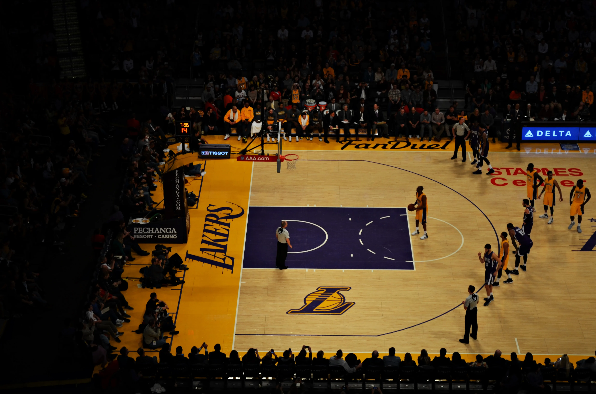

Lebrons James, actuellement en train d'exploser le scoreur. Aujourd'hui c'est l'un des meilleurs joueurs de NBA. C'est le seul joueur de cette liste qui est encore en activité sur le terrain. Récemment il est passé "le troisème joueur de Basket avec le plus grand total de points marqué en match". Le colosse, qui fait 2 mètre 03 et 113 kilos, est aussi surnommé le king, ou The Chosen One. Il a commencé sa carrière chez les cavaliers de Cleveland, il est actuellement chez les Lakers, l'un des deux grands clubs de Los Angeles, avec les Clippers, où il enchaîne les saisons remarquables. A chacun de ses matchs, il impressionne. En espérant que le choc Kawhi Leonard, au Clippers et Lebron James au Lakers face des étincelles!
Kobe Bryant, une légende, malheuresement mort d'un accident d'hélicoptère en Janvier 2020. Il était il y a peu le troisième plus grand scoreur de l'histoire , mais il a été détroné par le King. Une image de Kobe Bryant en lancer franc. Kobe est connu pour avoir était très individualiste, mais a évolué le long de sa carrière pour passer la balle de plus en plus. Il est maintenant à tout jamais dans la légende du bakset.
Michael Jordan, très célèbre pour ses slams dunks. Il est considéré par beaucoup, et par de très nombreuses références du sport comme le meilleur joueur de l'histoire. Il devient rapidement une star dès qu'il a rejoint les Chicago Bulls. Quand il faisait ses slams dunks on avait l'impression qu'il pouvait voler. Ses sauts étaient si incroyable, qu'ils sont l'origine du logo de la marque bien connu de chaussure Jordan. Sa capacité à sauter des 3 points lui a valu le surnom de air jordan et His Airness (traduit comme sa majesté volante). En 2003 il entre dans la légende sportive, il est à la retraite définitivement.
Magic Johns, un magicien du ballon, ses feintes et ses passes aveugles étaient des outils, qui faisait de lui un joueur de talent. Il était très doué pour manipuler le ballon. Il a un très bon "flair", ce qui fait de lui un excellent meneur. Il est considéré comme l'un des meilleurs meneurs de l'histoire du basket-ball, Earvin Johnson Jr était un joueur de talent capable de jouer à toutes les places. Il a fait toute sa carrière chez les Lakers de Los Angeles.
Kareem-Abdul Jabbar, le plus grand scoreur de tous les temps. Jusqu'à maintenant inégalé. Il est tout simplement considéré comme le meilleur pivot de tous les temps. Aucun autre joueur n'a marqué plus de points que lui en NBA : 38 387 ! Il a joué pendant une vingtaine d'année mais n'a eu que deux clubs dans sa longue carrière. Les Milwaukee Bucks jusqu'en 1975, de Los Angeles Lakers jusqu'en 1989.
Shaquille O'Neal, un véritable colosse, un joueur immense avec ses 2 m 16 et ses 147 kilos. Il est donc très impressionnant. Il reste pourtant un joueur très mobile, très énergique, qui sur le terrain n'hésite pas à bouger, se déplacer. Il joua chez les Celtics de Boston, les Magic d'Orlando mais, c'est avec les Lakers de Los Angeles qu'il vivra ses meilleures années.